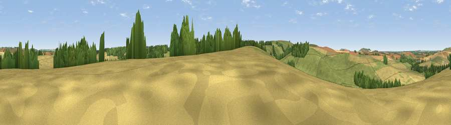

Lurkeley Hill
#31290 in England · top 61% of its area beats it · near East KennettThe view, rendered

A 360° render of this exact spot computed from the terrain model, tree cover and land cover — summer colours, afternoon light, calibrated against photographs of famous viewpoints. Real trees, hedges and buildings will differ in detail.
The panorama
Grey silhouette: terrain skyline in each direction (720 bearings, Earth curvature and refraction included). Dashed green: skyline with trees (+15 m) and buildings (+8 m) as obstacles. Blue strip: how far the ground is visible on each bearing.
Where the view opens
Wedge length = distance to the farthest visible ground on that bearing (vegetation-aware). Rings at 10, 25 and 50 km.
What fills the view
49% grassland · 43% cropland · 8% woodland
Angular shares of the visible panorama (visual magnitude), not map area. Landscape diversity 0.40 (0–1 Shannon).
Key numbers
More beautiful places nearby
The staircase of upgrades: each row has a higher view potential than everything closer. Driving times are estimates from straight-line distance, calibrated against real road routing — check an actual route before setting out.
| Place | Direction | Drive | Score |
|---|---|---|---|
| Viewpoint near East Kennett | SSW · 0 km | ~1 min | 46.5 |
| Thorn Hill | WSW · 1 km | ~3 min | 48.7 |
| Viewpoint near Alton Priors | S · 3 km | ~6 min | 70.3 |
| Viewpoint near Alton Priors | SW · 3 km | ~7 min | 72.5 |
| Viewpoint near Allington | WSW · 5 km | ~10 min | 75.6 |
| Martinsell viewpoint | ESE · 6 km | ~13 min | 77.3 |
| Viewpoint near Nympsfield | NW · 48 km | ~69 min | 77.5 |
| Viewpoint near Berwick St John | SSW · 50 km | ~71 min | 78.2 |
51.39575, -1.82424 · source: osm peak · position refined by local search. Computed location — check access rights before visiting.